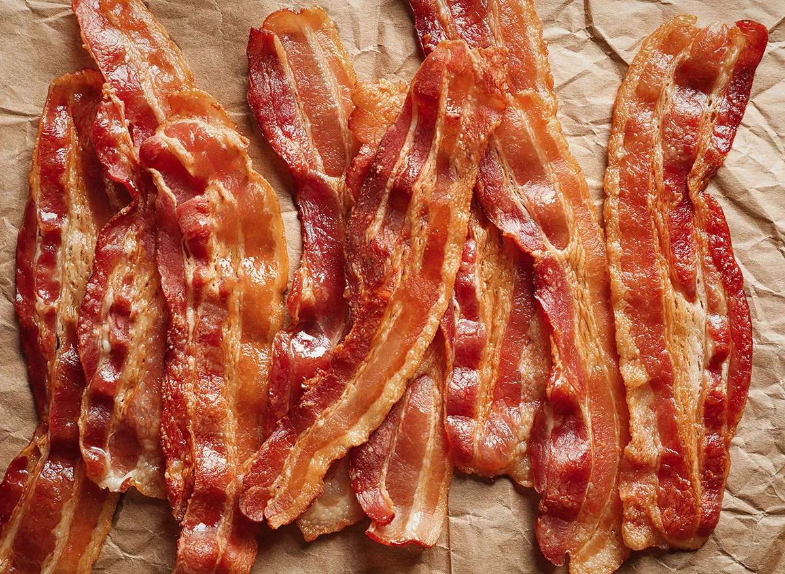

Can your dog eat bacon?
Your dog should not be eating, bacon but if you decide to let them have some, it has to be in small portions such as treats. Just like almost everything in life, there are good and bad effects of eating bacon. Bacon has negative effects to dogs in the form of fat and sodium. You might find that your dog is very sensitive towards bacon as some dogs tend to be very sensitive to any form of fatty foods. The best thing to do if your dogs vomits right after feeding him/her bacon is to make a call to your veterinarian.
Health risk of bacon to your dog.
A fully grown dog might be able to handle some of the negative effects of eating bacon, but small pups are more prone to serious health issues. The fatty grease that is inside bacon has the potential of clogging your dog's or pup's arteries. Smaller dogs such as miniature pinschers, pomeranians, chihuahuas, yorkshire terriers, and many other small breeds are more prone to pancreatitis. This however does not mean that larger dogs will not be affected by this illness. The feeding of large bacon portions is known to be one way of introducing pancreatitis into your dog's body. Pancreatitis has been known to bring on other illnesses such as lipemia (this is when there are high levels of fat in the blood), diabetes, and many others.
Pancreatitis symtoms:
- Bloating
- Depression
- Diarrhea
- Loss of appetite
- Fever
- Vomiting
- Low potassium levels
- Abdominal pain
- Increased heart rate
How to treat your dog's pancreatitis?
The first obvious step to take in treating your dog's pancreatitis would be to get all the necessary information from your veterinarian. The vet has to do the test necessary to confirm that yor pet does indeed have the disease. The main objective of treating pancreatitis is to flush the fat from the body. This is what the vet will do by administering IV fluids. These fluids are used to flush said fat from the body. Potassium might be administered if there seems to be a low potassium count in the dog's blood.
After the procedure has been completed, the vet will advise that you refrain from feeding your dog any type of hard food in order for the dog's pancreas to rest.
Bacon's salt effect on your dog.
Salt poisoning happens in dogs that intake too much salty foods such as bacon. Sodium ion poisoning is another name for salt poisoning. There are other human food that have high salt levels and is not wise to be fed to your dog. Some of these human foods are seasoned nuts, chips, and pretzels. These foods can cause an even more seriuod health problem in your dog known as bloat. Symptoms like these should give you the answer to the question of can dogs eat bacon. Some signs of sodium ion poisoning include:
- Diarrhea
- Tremors
- Vomiting
- Seizures
- Decreased appetite
Other dangerous foods for your dog
Bacon is not the only type of human food that can potentially harm your dog. Below are some other foods that can be just as bad if fed to your dog.
- Candy
- Coffee
- Grapes
- Macadamia nuts
- Chocolate
- Garlic
- Raisins
- Onions
- Avocados
How to treat your dog's Diarrhea.
Diarrhea will happen in your pet if they do not get the right balance in their diet. It is always a plus to know how to combat certain types of illnesses in your pets before they arise. Diarrhea is not a disease, it is simply a condition that happens when the body tries to get rid of bad food or certain types of pathogens before they are absorbed by the body.
Mild Diarrhea treatmentThis type of diarrhea can be treated easily at home by just putting your dog on a 24-HR rice-water diet. Be sure to use only white rice as it contains the necessary active probiotic cultures. Brown rice will not suffice. After putting your dog n the 24-HR rice-water diet, it would be best to put him/her ona short fast as this will allow the gastrointestinal tract (GIT) to rest.
Serious DiarrheaIt is never advised to try and treat severe diarrhea with home remedies. The best course of action is to consult your veterinarian and they will give you the best advise.
What are probiotics?
You would have seen the mention of probiotics earlier and might be wondering what they are. Probiotics are good bacteria that are good for your digestive system. But where do we find probiotics? Probiotics can be found in foods and snacks such as yogurt, dark chocolate, some types of cheese, leafy greens and dandelion greens, onions, and many others. Yogurt and lettuce are the only ones on this list that is recommended for your pet. So one good treat to feed after your dog or dogs eat bacon is yogurt. It is a tasty treat while also helping the digestive system.
Conclusion Can dogs eat bacon.
We have went over the question of whether or not your dog can eat bacon. After reading this blog posts, there should be a firm understanding of why feeding your dog sausage would be a bad idea. There are many other alternatives to feeding your dog sausage and i know your dog will love them too.